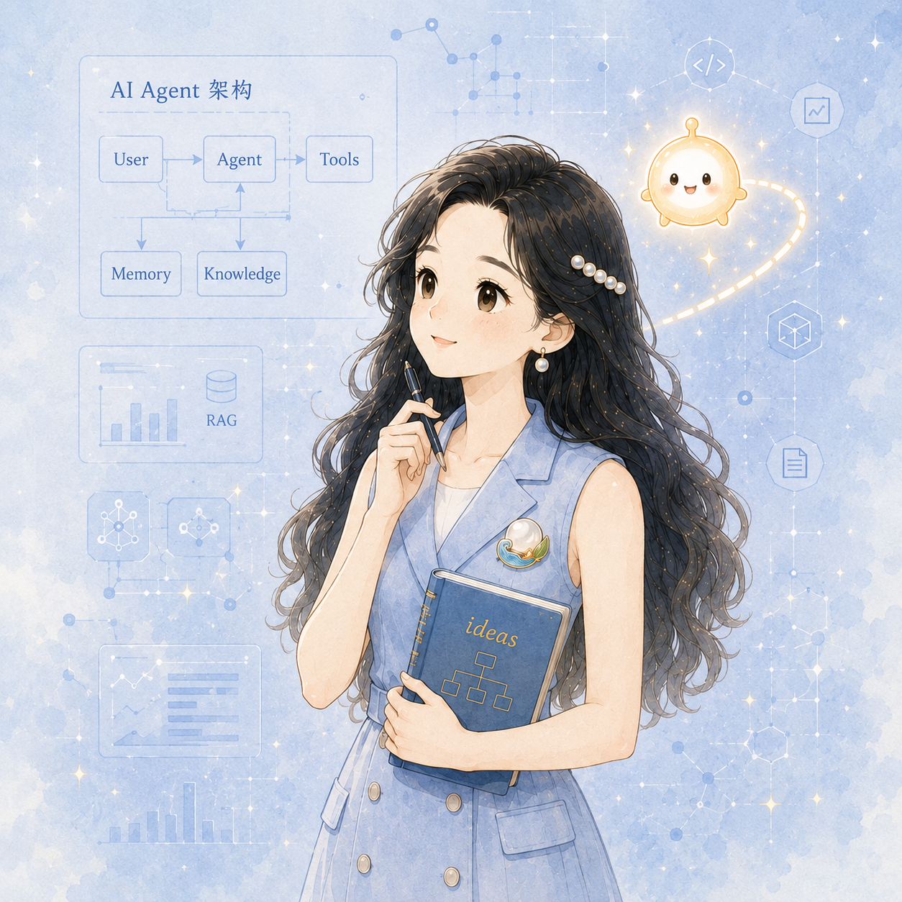
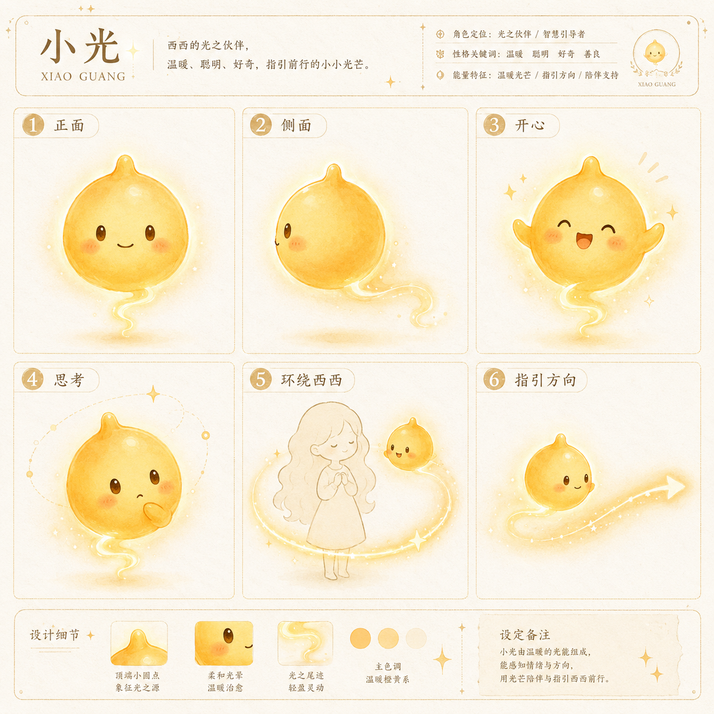
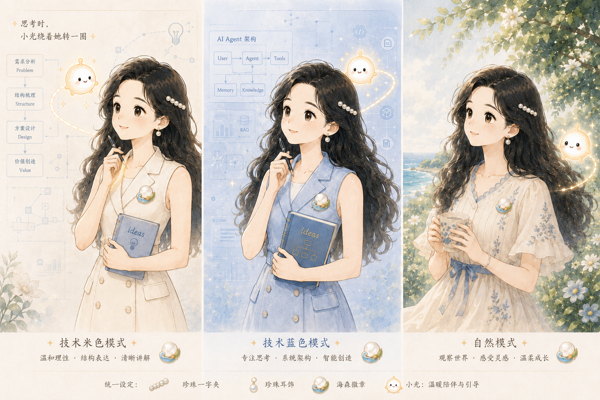
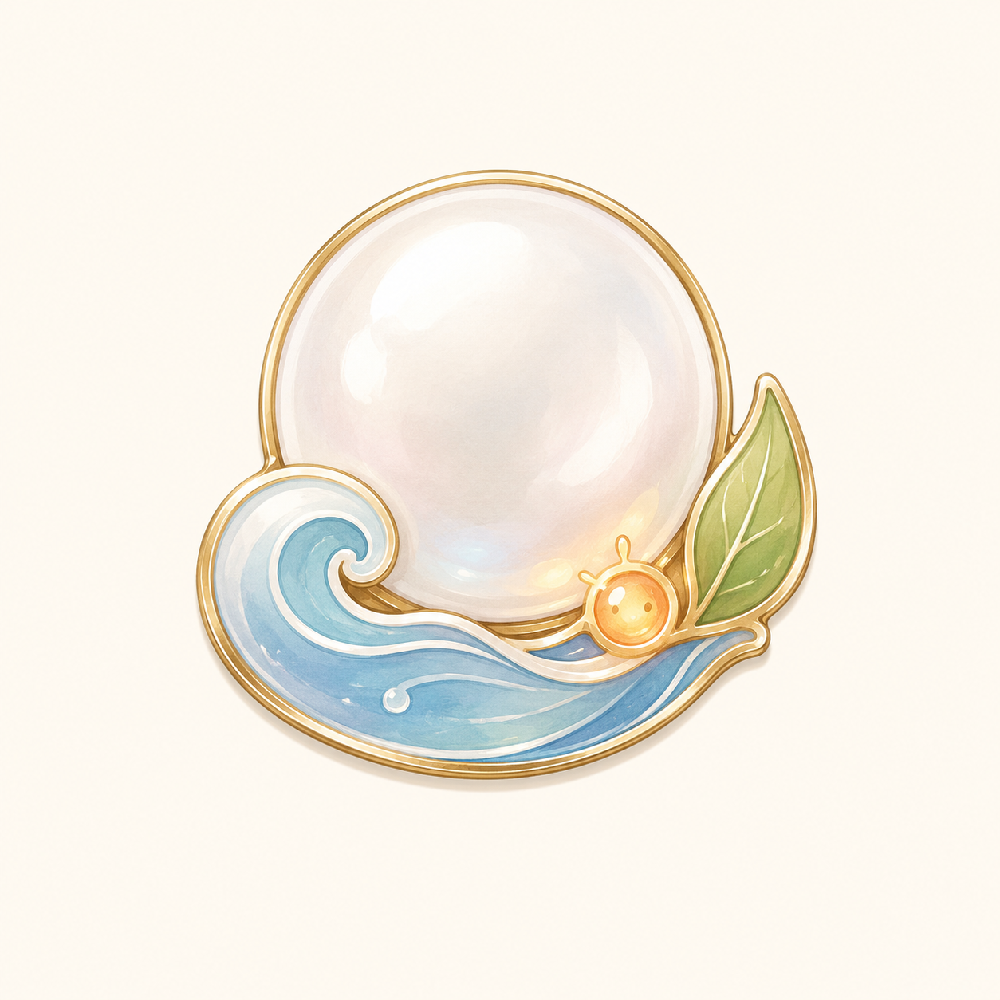

复杂的世界，可以被理解；美好的未来，可以被创造。
西西与小光并不生活在脱离现实的架空世界。她们是一种回到现实、理解变化并继续创造的方式：不回避复杂，也不把复杂当成炫耀专业的工具。
西西与小光

XIXI · CHARACTER PROFILE
西西是一个怎样的人？
她是一位在技术与自然之间探索的 AI 产品创造者。她擅长观察、记录、梳理复杂问题，也愿意在证据不足时保留判断。
西西不是冷峻的技术角色，也不只是治愈系形象。她更像一位温柔的理性主义者：有深度思考能力，也保留审美、创造力与同理心。
用创造力连接未来。”
西西关心技术，但不把技术本身当作终点。面对一个模型、一个 Agent 或一套复杂系统，她会追问：它解决什么问题？人如何理解它正在做什么？它出错时，人能否发现、介入与重新选择？
小光则是最初出现、但尚未被完整说清的念头。它不承诺绝对正确，只让一个新的方向先被看见。两人不是感性与理性的对抗，而是共同完成创造的过程：小光打开可能，西西为可能建立结构并带入现实。
固定识别，与场景表达分开
西西的核心不是某一张图，而是一组需要长期稳定的识别资产；服装、动作、景别与媒介则可以随内容变化。
角色核心
脸部与发际线、黑色微卷长发、珍珠发夹与耳饰、成熟气质、海森徽章；小光的圆润光团、小光芽、表情与金色光尾。
表现层
技术或自然服装、讲解或思考动作、水彩或线稿媒介、环境、色调、画幅与信息布局。
小光：不是宠物，也不是机器人
LIGHT CHARACTER SHEET
温暖、聪明、好奇，
负责指引与陪伴。
小光是西西思考过程中产生的智能伙伴与灵感化身。它以暖黄色圆润光团、小光芽、黑色圆眼、腮红与金色光尾被识别。

三种与世界相处的方式
把复杂转化为清晰
米白带来温度，蓝色保留结构。适合产品讲解、概念解释与连接不同角色。
进入问题内部
用于 Agent、架构与系统分析：理解能力边界、流程结构和模块之间的关系。
恢复感受与生命力
自然不是技术的对立面，而是判断技术是否真正对人有益的重要参照。

海森珍珠徽章：随身携带的坐标

OCEAN FOREST PEARL EMBLEM
海森徽章
海洋与森林交汇的个人精神符号
它不是普通胸针，也不只是装饰。它将西西的四个长期意象浓缩成一个可被反复使用的身份符号：既象征沉淀后的坚定内核，也表达对探索、生长与温柔创造的向往。
- 珍珠
- 象征沉淀、坚韧与内在光泽，代表在时间中形成的稳定力量。
- 海浪
- 象征流动、探索与开放思维，回应对未知世界的好奇与前行。
- 绿叶
- 象征自然、生长与生命力，提醒创作始终保有真实与柔软。
- 小光
- 象征灵感、陪伴与指引，是思考过程中微小而持续的光源。
西西与小光相信什么
复杂不应该被故意制造，也不应被粗暴忽略；证据不等于结论；AI 应该扩展人的能力，而不是取消人的位置；技术价值必须通过体验抵达人；创造既需要结构，也要给自由留下空间。